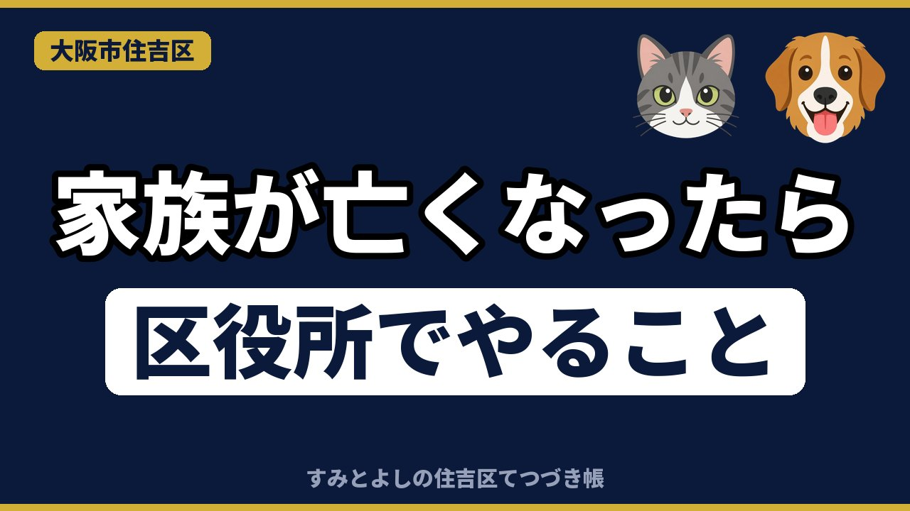
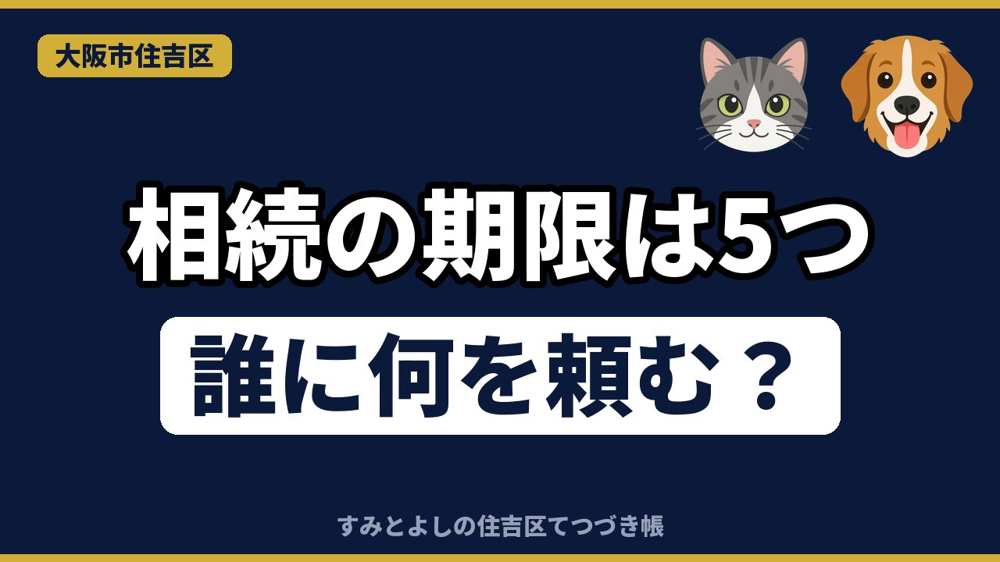

記事一覧
YouTube の解説動画を、文字で読める記事にしています。期限・金額・窓口は、法令や官公庁の公式ページで確認したものです。

【住吉区】家族が亡くなったら区役所で最初にやること｜死亡届・葬祭費・年金の窓口をすみとよしが解説2026年11月4日 ／ 家族が亡くなったあと、住吉区役所で最初にやる手続きと、年金・税金・相続の窓口を、すみとよしが解説します。
【住吉区】相続手続きの全体マップ｜5つの期限と「誰に何を頼む？」をすみとよしが解説2026年11月1日 ／ 相続が始まったときの手続きと5つの期限、誰に何を頼めばいいかを、すみとよしが解説します。